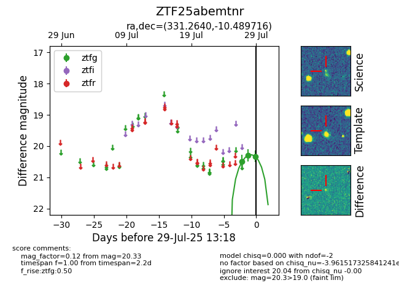

Target ZTF25abemtnr at 2025-07-29 13:18, see:
FINK: fink-portal.org/ZTF25abemtnr
Lasair: lasair-ztf.lsst.ac.uk/objects/ZTF25abemtnr
ALeRCE: alerce.online/object/ZTF25abemtnr
alt names
ZTF25abemtnr (ztf,fink)
coordinates:
equatorial (ra, dec) = (331.2640,-10.48972)
galactic (l, b) = (47.7982,-47.51636)
photometry
last ztfg=20.33
3 ztfg detections
